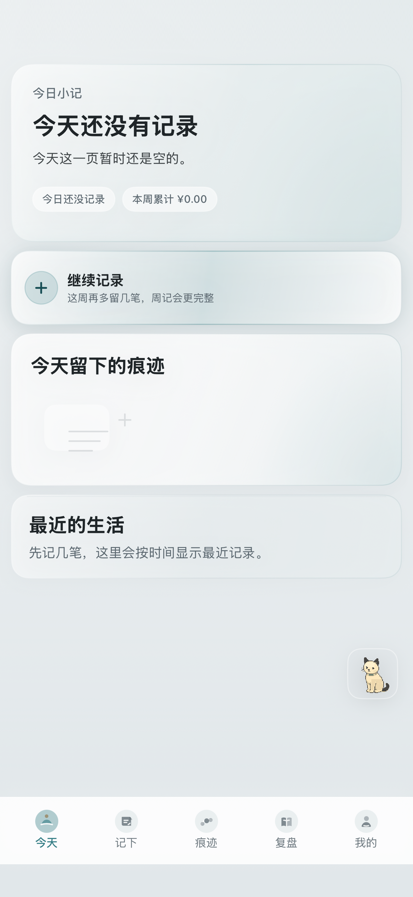
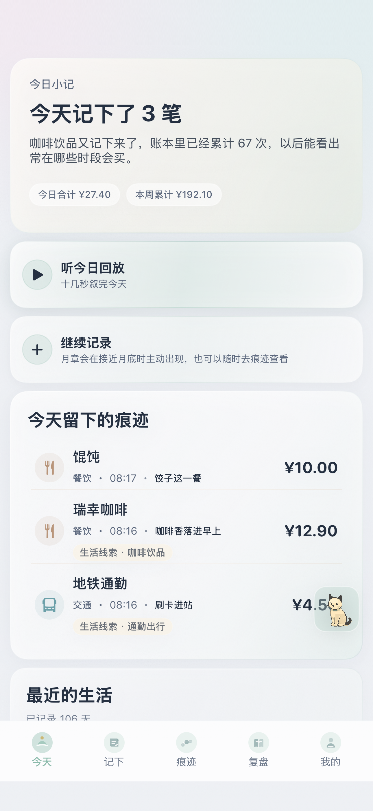

xLife · 叙述生活
用账单，
用账单，
叙述生活
账单只是注脚，生活才是主角。 xLife 取自 Xu（叙）和 Life（生活）：把每天记下的一笔，放回这一段日子里看。
账单默认保存在你的手机里，不登录也能记。越常记录，分类和备注越像你的生活习惯。当前开放 TestFlight 内测，正式上架后这里会更新 App Store 下载方式。
本地优先
习惯本地学习
照片与 OCR 原图不上云
联网整理可选

看看叙账怎么用
从今天记下一笔，到痕迹、复盘和线索。下面是当前默认主题下的真实界面。
你可以这样用叙账
账是素材，叙是目的。叙账不催你省，也不替你审判，只帮你把生活的痕迹讲清楚。
只输金额，也能省力
明确品牌时用专属生活句；没有品牌时，从本机账本习惯预填分类和备注。免费也能完整记账。
痕迹与回放
今日回放、周度五幕、月度六章，把一段时间的花费，讲成可以回看的生活章。
联网整理 · 可选
本机规则先生成；登录并主动开启联网整理后，DeepSeek 只处理受控、去标识化的结构化事实，用于轻润色和封面建议。